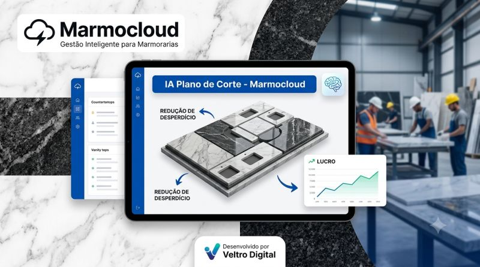

Home · Solutions · MarmoCloud
IndustrySaaS
MarmoCloud
SaaS platform for stone fabricators to create quotes quickly and accurately, with multi-tenant isolation of pricing, teams and projects per company.
The client's pain point
Manual quotes, scattered spreadsheets and lack of standardization caused rework, pricing errors and slow responses to end customers — impacting conversion and margins.
How we arrived at the solution
01
Discovery
Meetings with the business to map quoting flow, roles and pricing rules.
02
Scoping
Requirements capture, profiles (super admin, fabricator admin, user) and MVP priorities.
03
Development
Platform built around the pain point — not generic features with no real use.
What the system does
- Accurate quotes with multi-tenant isolation
- Team management and permissions per fabricator
- Pricing and settings isolated per company
- Operational workflow designed for day-to-day industry use

LinkedIn
Artificial Intelligence only has value when it solves real problems
In the stone fabrication sector, bottlenecks are practical: slab waste, slow quoting and lack of integration between sales and production. MarmoCloud was born to address this pain — accurate quotes, smart cut plans and end-to-end control.
View full post on LinkedIn →